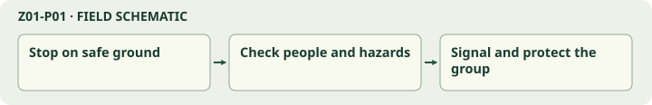

Z01-P01 · Survival fundamentals
Stop, stabilize, signal
Decide what needs action before the group moves.
When it applies · A walking party in Minnesota or the Upper Midwest with an unexpected delay, injury or loss of route.
Equipment · Use a phone, communicator, whistle, headlamp and insulation if available.

Actions
- Pause on stable ground and check the scene before approaching an injured person. Check responsiveness, breathing and obvious life-threatening injury.[T01]
- If someone is unresponsive, breathing abnormally or bleeding severely, call 911 and follow the dispatcher. Give your location and the immediate hazard.[T02, T06]
- If travel has stopped, use available shelter and insulation. Tell everyone where to wait and who is trying to make contact.[E05, ED]
Verify · Each person can name the immediate hazard, the group's location or last known point, and who is attempting contact.[ED]
Stop or change course · Leave immediate danger by a clearly safer path. If location and safe travel are uncertain, stay findable and seek help.[T06]
Evidence and editorial notes
- E05 · NWS · What To Do If You're Caught in a Winter Storm
- Outside and find shelter · Cold, wet or windy winter conditions
Block wind, stay dry and keep off cold ground. Keep exposure reduction separate from making a fire.
Primary source · checked 2026-11-24 - T01 · American Red Cross · First Aid Steps
- First Aid Steps > Check the scene; check the person · Lay responder in United States; assess safety before contact
Check scene safety, responsiveness, breathing and immediately life-threatening conditions.
Primary source · checked 2026-11-24 - T02 · American Red Cross · First Aid Steps
- First Aid Steps > Call 9-1-1 · Lay emergency response to unresponsiveness, abnormal breathing or severe bleeding
Activate EMS and get needed equipment. Follow dispatcher directions and act within training.
Primary source · checked 2026-11-24 - T06 · NPS · Outdoor Emergency Plan
- If you get lost or hurt; call for help · Outdoor US emergency
Communicate location, last known point, situation and needs. Stay put when unable to establish a safe route unless immediate danger requires movement.
Primary source · checked 2026-11-24
Source lineage · B012-P01.